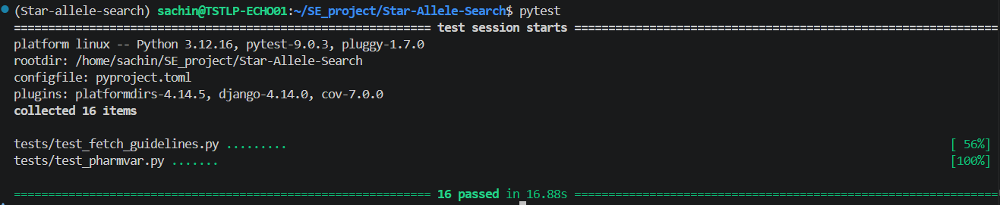
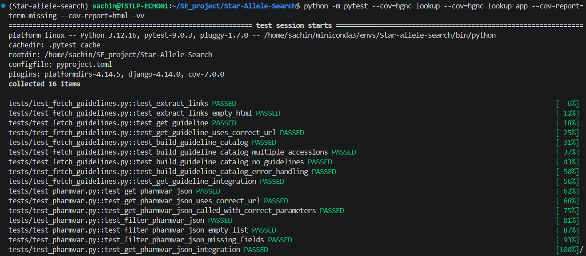
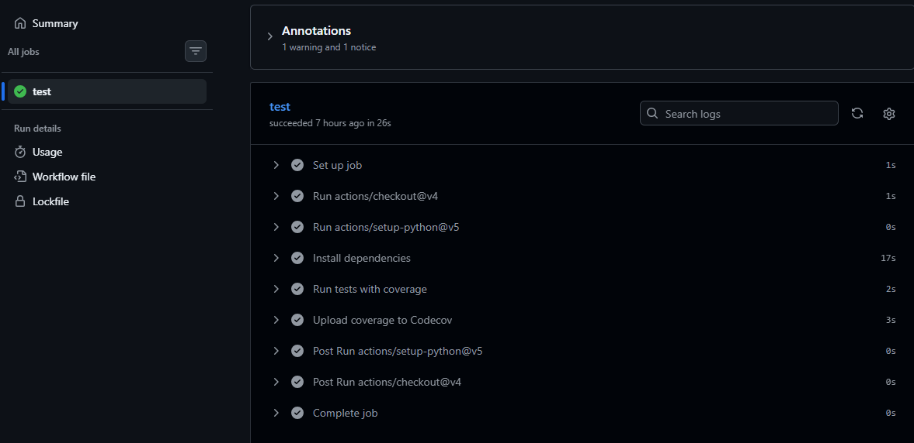

Testing
Overview
Star-Allele-Search uses automated testing to verify that application functionality behaves as expected and to reduce the risk of introducing regressions during development.
Testing is performed using PyTest and is automatically executed through GitHub Actions whenever code is pushed to the repository or submitted in a pull request.
Automated Testing
The automated test suite verifies the behaviour of individual modules and application workflows.
Tests can be executed locally using:
pytest

Figure 1. Successful execution of the Star-Allele-Search test suite.
Test Coverage
Coverage analysis is performed using pytest-cov to measure how much of the source code is exercised by the automated tests.
Coverage can be generated using:
pytest --cov=App --cov-report=term-missing --cov-report=html -vv
The command generates a terminal summary and an HTML coverage report that can be inspected in a web browser.

Figure 2. Coverage generation using pytest-cov.
Coverage Objectives
The test suite is designed to cover:
- PharmVar API integration
- ClinPGx annotation retrieval
- HGNC identifier retrieval
- Guideline processing
- Variant validation
- Exception handling
- Error conditions
Types of Testing
Unit Testing
Unit tests validate individual functions in isolation to ensure that each software component behaves correctly.
Examples include:
- PharmVar data retrieval functions
- HGNC lookup functions
- Annotation filtering functions
- Guideline catalogue generation
Exception Testing
Exception tests ensure that the software handles invalid data and external service failures appropriately.
Examples include:
- Invalid allele names
- Network failures
- Missing API credentials
- Unexpected API responses
Continuous Integration
Star-Allele-Search uses GitHub Actions for Continuous Integration (CI).
Every push and pull request automatically triggers a workflow that:
- Creates a clean Python environment.
- Installs project dependencies.
- Executes the automated test suite.
- Generates code coverage metrics.
- Uploads coverage reports to Codecov.
This ensures that code changes are automatically validated before being merged into the project.

Figure 3. Successful GitHub Actions workflow showing automated testing and Codecov integration.
Quality Assurance Workflow
Code Change
│
▼
GitHub Push / Pull Request
│
▼
GitHub Actions
│
┌────┼────────────┐
│ │ │
▼ ▼ ▼
Install Run Tests Generate Coverage
Dependencies
│
▼
Codecov Upload
│
▼
Pass / Fail Report
The Continuous Integration pipeline helps ensure that all code committed to the repository is automatically tested and validated.
????ADD A SCREENSHOT OF GITHUB ACtTIONS AND COVERAGE REPORT HERE/